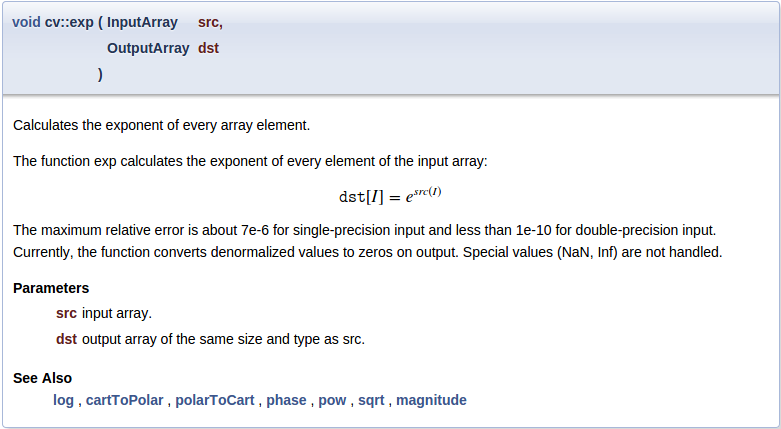
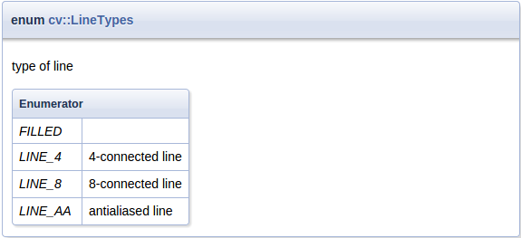

Writing documentation for OpenCV
Doxygen overview
Intro
Doxygen is documentation generation system with a lot of great features, such as:
- parse program sources to produce actual and accurate documentation
- check documentation for errors
- insert images and formulas
- use markdown syntax and plain HTML for precise text formatting
- generate documentation in many different formats
OpenCV library existing documentation has been converted to doxygen format.
Installation
Please, check official download and installation pages. Some linux distributions can also provide doxygen packages.
Generate documentation
Get the OpenCV sources (version 3.0 and later)
Optional: get the OpenCV_contrib sources
Create build directory near the sources folder(s) and go into it
Run cmake (assuming you put sources to opencv folder):
cmake ../opencv
Or if you get contrib sources too:
cmake -DOPENCV_EXTRA_MODULES_PATH=../opencv_contrib/modules ../opencv
Run make:
make doxygen
Open doc/doxygen/html/index.html file in your favorite browser
Quick start
These instructions are specific to OpenCV library documentation, other projects can use different layout scheme and documenting agreements.
Documentation locations
Whole documentation is gathered from many different places:
- source code entities, like classes, functions or enumerations, should be documented in corresponding header files, right prior entity definition. See examples in next sections.
- pages are good place to put big pieces of text with images and code examples not directly connected with any source code entity. Pages should be located in separate files and contained in several predefined places. This tutorial is example of such page.
- images can be used to illustrate described things. Usually located at the same places as pages, images can be inserted to any place of the documentation.
- code examples show how to use the library in real applications. Each sample is self-contained file which represents one simple application. Parts of these files can be included into documentation and tutorials to demonstrate function calls and objects collaboration.
- BibTeX references are used to create one common bibliography. All science books, articles and proceedings served as basis for library functionality should be put in this reference list.
Following scheme represents common documentation places for opencv repository:
<opencv> ├── doc - doxygen config files, root page (root.markdown.in), BibTeX file (opencv.bib) │ ├── tutorials - tutorials hierarchy (pages and images) │ └── py_tutorials - python tutorials hierarchy (pages and images) ├── modules │ └── <modulename> │ ├── doc - documentation pages and images for module │ └── include - code documentation in header files └── samples - place for all code examples ├── cpp │ └── tutorial_code - place for tutorial code examples └── ...
Automatic code parser looks for all header files (“.h, .hpp” except for “.inl.hpp; .impl.hpp; _detail.hpp”) in include folder and its subfolders. Some module-specific instructions (group definitions) and documentation should be put into “include/opencv2/<module-name>.hpp” file.
You can put C++ template implementation and specialization to separate files (“.impl.hpp”) ignored by doxygen.
Files in src subfolder are not parsed, because documentation is intended mostly for the library users, not developers. But it still is possible to generate full documentation by customizing processed files list in cmake script (doc/CMakeLists.txt) and doxygen options in its configuration file (doc/Doxyfile.in).
Since version 3.0 all new modules are placed into opencv_contrib repository, it has slightly different layout:
<opencv_contrib> └── modules └── <modulename> ├── doc - documentation pages and images, BibTeX file (<modulename>.bib) ├── include - code documentation in header files ├── samples - place for code examples for documentation and tutorials └── tutorials - tutorial pages and images
Example
To add documentation for functions, classes and other entities, just insert special comment prior its definition. Like this:
/** @brief Calculates the exponent of every array element.
The function exp calculates the exponent of every element of the input array:
\f[ \texttt{dst} [I] = e^{ src(I) } \f]
The maximum relative error is about 7e-6 for single-precision input and less than 1e-10 for
double-precision input. Currently, the function converts denormalized values to zeros on output.
Special values (NaN, Inf) are not handled.
@param src input array.
@param dst output array of the same size and type as src.
@sa log , cartToPolar , polarToCart , phase , pow , sqrt , magnitude
*/
CV_EXPORTS_W void exp(InputArray src, OutputArray dst);
Here you can see:
special C-comment syntax denotes it is doxygen comment
/** ... */command
briefdenotes following paragraph is a brief description@brief
empty line denotes paragraph end
TeX formula between
f[andf]commands\f[ ... \f]
command
paramdenotes following word is name of the parameter and following text is description of the parameter; all parameters are placed in a list@param
command
sastarts “See also” paragraph containing references to some classes, methods, pages or URLs.@sa
Produced reference item looks like this:
The “More…” link brings you to the function documentation:
Another example
Different comment syntax can be used for one-line short comments:
//! type of line
enum LineTypes {
FILLED = -1,
LINE_4 = 4, //!< 4-connected line
LINE_8 = 8, //!< 8-connected line
LINE_AA = 16 //!< antialiased line
};
Here:
special C++-comment syntax denotes it is doxygen comment
//!additional symbol
<denotes this comment is located after documented entity//!<
Produced documentation block looks like this:
More details
Command prefix
Doxygen commands starts with @ or \ sign:
@brief ...
or
\brief ...
Comment syntax
Doxygen comment can have different forms:
C-style:
/** ... */
or
/*! ... */
C++-style
//! ...
or
/// ...
Lines can start with '*':
/**
* ...
* ...
*/
Can be placed after documented entity:
//!< ...
/**< ... */
Paragraph end
To end paragraph, insert empty line or any command starting new paragraph:
@brief brief description paragraph
brief continues
new paragraph
@note new note paragraph
note paragraph continues
another paragraph
paragraph continues
Naming
Pages, anchors, groups and other named entities should have unique name inside the whole project. It is a good idea to prefix such identifiers with module name:
@page core_explanation_1 Usage explanation
@defgroup imgproc_transform Image transformations
@anchor mymodule_interesting_note
Supported Markdown
Doxygen supports Markdown formatting with some extensions. Short syntax reference is described below, for details visit Markdown support.
lists
Bulleted:
- item1
- item2
Numbered:
1. item1
2. item2
or
-# item1
-# item2
emphasis
_italic_
__bold__
use html in complex cases:
<em>"path/to/file"</em>
links
explicit link:
[OpenCV main site](http://opencv.org)
automatic links:
<http://opencv.org>
or even:
http://opencv.org
images

headers
Level1
======
Level2
------
### Level3
#### Level4
header id
You can assign a unique identifier to any header to reference it from other places.
Header {#some_unique_identifier}
------
...
See @ref some_unique_identifier for details
page id
Each page should have additional Level1 header at the beginning with page title and identifier:
Writing documentation for OpenCV {#tutorial_documentation}
================================
tables
Example from doxygen documentation:
First Header | Second Header
------------- | -------------
Content Cell | Content Cell
Content Cell | Content Cell
Commonly used commands
Most often used doxygen commands are described here with short examples. For the full list of available commands and detailed description, please visit Command reference.
Basic commands
brief - paragraph with brief entity description
param - description of function argument.
Multiple adjacent statements are merged into one list. If argument with this name is not found in actual function signature - doxygen warning will be produced. Function can have either no documented parameters, either all should be documented.
sa - “See also” paragraph, contains references to classes, functions, pages or URLs
note - visually highlighted “Note” paragraph. Multiple adjacent statements are merged into one block.
return, returns - describes returned value of a function
overload - adds fixed text to the function description: “This is an overloaded member function, provided for convenience. It differs from the above function only in what argument(s) it accepts.”
anchor - places invisible named anchor, which can be referenced by
refcommand. It can be used in pages only.ref - explicit reference to a named section, page or anchor.
If such entity can not be found - doxygen warning will be generated. This command has an optional argument - link text.
Doxygen also generates some links automatically: if text contains word which can be found in documented entities - reference will be generated. This functionality can be disabled by prefixing the word with
%symbol.Explicit reference: @ref MyClass Explicit named reference: @ref example_page "Example page" Implicit reference: cv::abc::MyClass1 or just MyClass1 Disable implicit reference: %MyClass1
f - formula
Inline formulas are bounded with
f$command:\f$ ... \f$
Block formulas - with
f[andf]commands:\f[ ... \f]
Code inclusion commands
To mark some text as a code in documentation, code and endcode commands are used.
@code
float val = img.at<float>(borderInterpolate(100, img.rows, cv::BORDER_REFLECT_101),
borderInterpolate(-5, img.cols, cv::BORDER_WRAP));
@endcode
Syntax will be highlighted according to the currently parsed file type (C++ for .hpp, C for .h) or you can manually specify it in curly braces:
@code{.xml}
To include whole example file into documentation, include and includelineno commands are used. The file is searched in common samples locations, so you can specify just its name or short part of the path. The includelineno version also shows line numbers but prevents copy-pasting since the line numbers are included.
@include samples/cpp/test.cpp
If you want to include some parts of existing example file - use snippet command.
First, mark the needed parts of the file with special doxygen comments:
//! [var_init]
int a = 0;
//! [var_init]
Then include this snippet into documentation:
@snippet samples/cpp/test.cpp var_init
Currently most of such partial inclusions are made with dontinclude command for compatibility with the old rST documentation. But newly created samples should be included with the snippet command, since this method is less affected by the changes in processed file.
Toggle buttons inclusion commands
Toggle buttons are used to display the selected configuration (e.g. programming language, OS, IDE).
To use the buttons in documentation, add_toggle and end_toggle commands are used.
The command add_toggle can be
- general: add_toggle{Button Name}
- for C++: add_toggle_cpp
- for Java: add_toggle_java
- for Python: add_toggle_python
Example:
@add_toggle{Button Name}
text / code / doxygen commands
@end_toggle
For example using toggle buttons with text and code snippets:
### Buttons Example
@add_toggle_cpp
Text for C++ button
@snippet samples/cpp/tutorial_code/introduction/documentation/documentation.cpp hello_world
@end_toggle
@add_toggle_java
Text for Java button
@snippet samples/java/tutorial_code/introduction/documentation/Documentation.java hello_world
@end_toggle
@add_toggle_python
Text for Python button
@snippet samples/python/tutorial_code/introduction/documentation/documentation.py hello_world
@end_toggle
Result looks like this:
Buttons Example
Text for C++ button
std::cout << "Hello World!";
Text for Java button
System.out.println ("Hello World!");
Text for Python button
print('Hello world!')
As you can see, the buttons are added automatically under the previous heading.
Grouping commands
All code entities should be put into named groups representing OpenCV modules and their internal structure, thus each module should be associated with a group with the same name. Good place to define groups and subgroups is the main header file for this module: “<module>/include/opencv2/<module>.hpp”.
Doxygen groups are called “modules” and are shown on “Modules” page.
/**
@defgroup mymodule My great module
optional description
@{
@defgroup mymodule_basic Basic operations
optional description
@defgroup mymodule_experimental Experimental operations
optional description
@}
*/
To put classes and functions into specific group, just add ingroup command to its documentation, or wrap the whole code block with addtogroup command:
/** @brief Example function
@ingroup mymodule
*/
or
/**
@addtogroup mymodule_experimental
@{
*/
... several functions, classes or enumerations here
/**
@}
*/
Publication reference
Use cite command to insert reference to related publications listed in Bibliography page.
First, add publication BibTeX record into “<opencv>/doc/opencv.bib” or “<opencv_contrib>/modules/<module>/doc/<module>.bib” file:
@ARTICLE{Bradski98,
author = {Bradski, Gary R},
title = {Computer vision face tracking for use in a perceptual user interface},
year = {1998},
publisher = {Citeseer}
}
Try not to add publication duplicates because it can confuse documentation readers and writers later.
Then make reference with cite command:
@cite Bradski98
To get BibTeX record for the publications one can use Google Scholar. Once the publication have been found - follow its “Cite” link and then choose “BibTeX” option:
Step-by-step
Steps described in this section can be used as checklist during documentation writing. It is not necessary to do things in the same order, but some steps really depend on previous. And of course these steps are just basic guidelines, there is always a place for creativity.
Document the function
- Add empty doxygen comment preceding function definition.
- Add brief command with short description of function meaning at the beginning.
- Add detailed description of the function.
- Optional : insert formulas, images and blocks of example code to illustrate complex cases
- Optional : describe each parameter using the param command.
- Optional : describe return value of the function using the returns command.
- Optional : add “See also” section with links to similar functions or classes
- Optional : add bibliographic reference if any.
- Generate doxygen documentation and verify results.
Write the tutorial
Formulate the idea to be illustrated in the tutorial.
Make the example application, simple enough to be understood by a beginning developer. Be laconic and write descriptive comments, don’t try to avoid every possible runtime error or to make universal utility. Your goal is to illustrate the idea. And it should fit one source file!
If you want to insert code blocks from this file into your tutorial, mark them with special doxygen comments (see here).
If you want to write the tutorial in more than one programming language, use the toggle buttons for alternative comments and code (see here).
Collect results of the application work. It can be “before/after” images or some numbers representing performance or even a video.
Save it in appropriate format for later use in the tutorial:
- To save simple graph-like images use lossless “.png” format.
- For photo-like images - lossy “.jpg” format.
- Numbers will be inserted as plain text, possibly formatted as table.
- Video should be uploaded on YouTube.
Create new tutorial page (“.markdown” -file) in corresponding location (see here), and place all image files near it (or in “images” subdirectory). Also put your example application file and make sure it is compiled together with the OpenCV library when
-DBUILD_EXAMPLES=ONoption is enabled on cmake step.Modify your new page:
Add page title and identifier, usually prefixed with “tutorial_” (see here). You can add a link to the previous and next tutorial using the identifier
@prev_tutorial{identifier} @next_tutorial{identifier}
Do not write the hashtag (#), example:
Incorrect:
@prev_tutorial{#tutorial_documentation}
Correct:
@prev_tutorial{tutorial_documentation}
Add brief description of your idea and tutorial goals.
Describe your program and/or its interesting pieces.
Describe your results, insert previously added images or other results.
To add a youtube video, e.g. www.youtube.com/watch?v= ViPN810E0SU, use youtube {Video ID}:
@youtube{ViPN810E0SU}
Add bibliographic references if any (see here).
Add newly created tutorial to the corresponding table of contents. Just find “table_of_content_*.markdown” file with the needed table and place new record in it similar to existing ones.
- @subpage tutorial_windows_visual_studio_image_watch _Languages:_ C++, Java, Python _Compatibility:_ \>= OpenCV 2.4 _Author:_ Wolf Kienzle You will learn how to visualize OpenCV matrices and images within Visual Studio 2012.
As you can see it is just a list item with special subpage command which marks your page as a child and places it into the existing pages hierarchy. Add compatibility information, authors list and short description. Also note the list item indent, empty lines between paragraphs and special italic markers.
Generate doxygen documentation and verify results.
References
- Doxygen - main Doxygen page
- Documenting basics - how to include documentation in code
- Markdown support - supported syntax and extensions
- Formulas support - how to include formulas
- Supported formula commands - HTML formulas use MathJax script for rendering
- Command reference - supported commands and their parameters